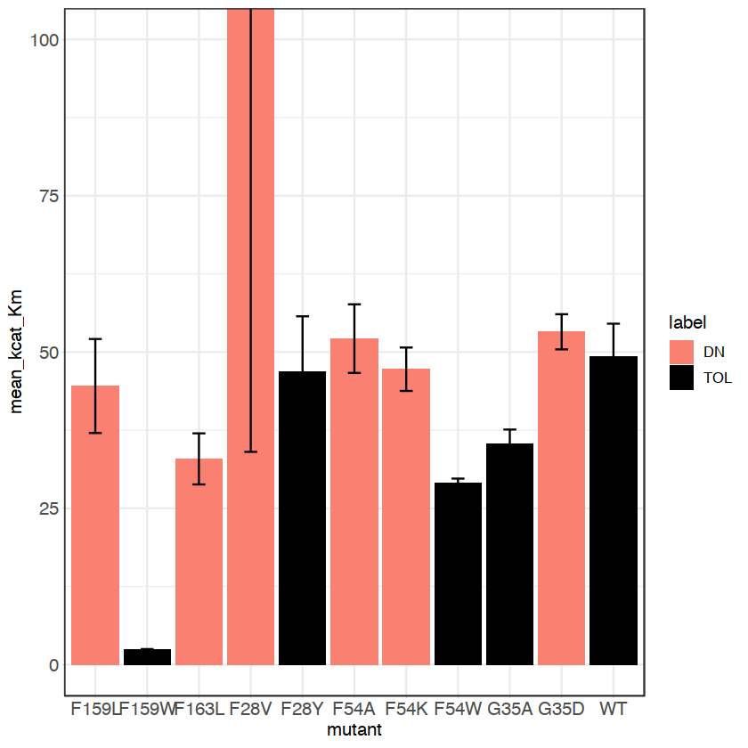

library(tidyverse)
library(readxl)
library(lubridate)
# set theme for plotting
# Set font sizes
SMALL_SIZE = 10
MEDIUM_SIZE = 11
BIG_SIZE = 12
# SMALL_SIZE = 6
# MEDIUM_SIZE = 7
# BIG_SIZE = 8
theme_custom <- theme_bw() +
theme(
text = element_text(family = "Helvetica", size = BIG_SIZE),
axis.title = element_text(size = BIG_SIZE),
axis.text = element_text(size = BIG_SIZE),
axis.ticks = element_line(size = 0.05),
axis.ticks.length = unit(0.05, 'cm'),
# legend.position = 'right',
# legend.spacing.y = unit(0.01, 'cm'),
# legend.box = 'horizontal',
# legend.box.just = 'left',
# legend.text = element_text(size = SMALL_SIZE),
# legend.title = element_text(size = SMALL_SIZE),
# legend.margin = margin(t = 0, unit='cm'),
axis.line = element_line(size = 0.1),
strip.text.x = element_text(size = SMALL_SIZE)
)
# options(repr.plot.width=20, repr.plot.height=5)
-- Attaching packages ----------------------------------------------------------------------------------------------------------------- tidyverse 1.3.0 --
v ggplot2 3.3.2 v purrr 0.3.4
v tibble 3.0.4 v dplyr 1.0.2
v tidyr 1.1.2 v stringr 1.4.0
v readr 1.4.0 v forcats 0.5.0
-- Conflicts -------------------------------------------------------------------------------------------------------------------- tidyverse_conflicts() --
x dplyr::filter() masks stats::filter()
x dplyr::lag() masks stats::lag()
Attaching package: 'lubridate'
The following objects are masked from 'package:base':
date, intersect, setdiff, union
10.69340436/0.2728471828
39.1919177990501
df
| mutant | mean_kcat | kcat_se | mean_Km | Km_se | mean_kcat_Km | se |
|---|---|---|---|---|---|---|
| <chr> | <dbl> | <dbl> | <dbl> | <dbl> | <dbl> | <dbl> |
| F159L | 9.114938 | 1.3121539 | 0.21566538 | 0.06583804 | 44.559616 | 7.5188887 |
| F159W | 12.194720 | 8.5114091 | 5.26411408 | 3.78409341 | 2.388556 | 0.1001328 |
| F163L | 5.610758 | 1.0637660 | 0.17724560 | 0.05433110 | 32.907605 | 4.0855190 |
| F28V | 4.228001 | 0.9689128 | 0.07918968 | 0.07351692 | 304.273725 | 270.2417055 |
| F28Y | 6.367021 | 1.8308649 | 0.14880516 | 0.06738507 | 46.816381 | 8.8966013 |
| F54A | 12.619024 | 1.6376113 | 0.24806541 | 0.05751508 | 52.142129 | 5.4878566 |
| F54K | 13.518026 | 3.1104484 | 0.28281945 | 0.04504452 | 47.244156 | 3.4734449 |
| F54W | 14.648773 | 3.2075299 | 0.50129082 | 0.09882479 | 29.091310 | 0.6634617 |
| G35A | 31.508090 | 0.8867615 | 0.89668921 | 0.08232533 | 35.345388 | 2.2561433 |
| G35D | 26.860471 | 1.2913765 | 0.50730191 | 0.05106602 | 53.230840 | 2.8127442 |
| WT | 21.843082 | 5.6557638 | 0.42999721 | 0.08543000 | 49.229439 | 5.2995163 |
domnegs = c('F28V','H32D','H32I','G35D','H50N','P51A',
'P51E','F54A','F54K','N156A','F159L','F163L')
tolerant = c('F28Y','H32L','H32E','G35A','H50R','P51G',
'F54W','N156W','F159W','F163Y')
# read in GAP data
df <- read_delim('GAP_computed_kcat_Km/GAP_table_raw.txt', delim='\t', col_types=cols())
WT <- filter(df, mutant=='WT')
df %>%
mutate('label' = ifelse(mutant %in% domnegs, 'DN', 'TOL')) %>%
ggplot(aes(mutant, mean_kcat_Km, fill=label)) +
geom_bar(stat='identity') +
geom_errorbar(aes(ymin = mean_kcat_Km - se, ymax = mean_kcat_Km + se), width = 0.25) +
scale_fill_manual(values = c('salmon','black')) +
theme_custom +
coord_cartesian(ylim = c(0, 100))

df_fit6 <- read_csv('../../../Data/6gen_fitness_current.csv', col_types=cols()) %>%
select(mutant, score)
df %>%
mutate('label' = ifelse(mutant %in% domnegs, 'DN', 'TOL')) %>%
left_join(df_fit6, by='mutant') %>%
ggplot(aes(score, mean_kcat_Km, color=label)) +
geom_point(size=5) +
geom_text(aes(label=mutant), hjust=0.75, vjust=1.5) +
scale_color_manual(values = c('salmon','black')) +
theme_custom
Warning message:
"Removed 1 rows containing missing values (geom_point)."
Warning message:
"Removed 1 rows containing missing values (geom_text)."